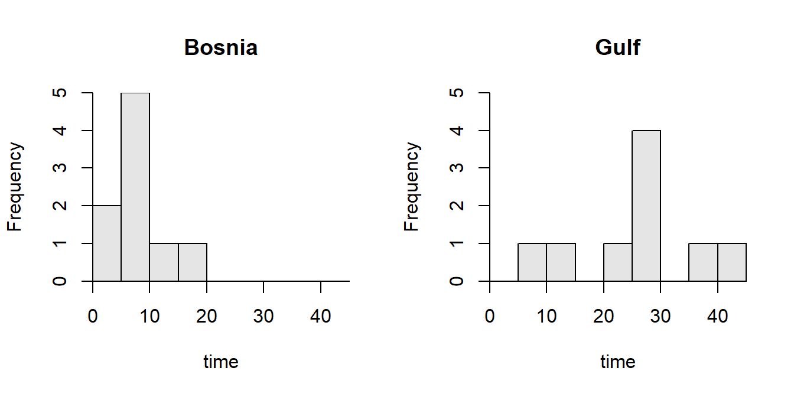

Compost Type and Germination Rates
-
α = 0.10.
-
HA: μb-μh > 0 and H0: μb-μh = 0, where μ is the mean number of germinated plants, b is the bought compost, and h is the homemade compost.
-
2-sample t-test because (i) two groups/populations are considered (bought and homemade compost), (ii) a quantitative variable (number germinated) was recorded, and (iii) individuals in the groups are independent (there is no known connection between all pairs of containers with bought and homemade compost).
-
An experimental study was conducted without obvious random selection of the containers wtih soil, but with randomization allocation (placement of containers in the greenhouse).
-
The assumptions are met because (i) the samples are independent (as described above), (ii) nb+nh = 18+10 = 28 > 15 and the two sample distributions (shown on the handout) are not obviously strongly skewed, and (iii) the variances appear to be equal (Levene’s p-value = 0.2414 > α).
-
x̄b-x̄h = 42.67-28.9 = 13.77.
-
t = 8.7763 with 26 df. Note that \(s_p^2\)=15.826 and the SE is 1.569.
-
p-value<0.00005 (more specifically 1.492e-09).
-
Reject H0 because the p-value < α.
-
It appears that the the mean number of plants that germinate is significantly lower for the homemade than the bought compost. Thus, the homemade compost “performs” worse than the store bought compost and may lead to increased costs for the greenhouse.
-
I am 90% confident that the mean number of plants that germinated with the bought compost is at least 11.7 plants greater than the mean number of plants that germinated with the homemade compost.
R Appendix.
xbar1 <- 42.67; s1 <- 4.33; n1 <- 18
xbar2 <- 28.90; s2 <- 3.21; n2 <- 10
df <- n1+n2-2
sp2 <- ((n1-1)*(s1^2)+(n2-1)*(s2^2))/df
se <- sqrt(sp2*(1/n1+1/n2))
stat <- xbar1-xbar2
t <- stat/se
pv <- distrib(t,distrib="t",df=df,lower.tail=FALSE)
lcb <- stat+distrib(0.9,type="q",distrib="t",df=df,lower.tail=FALSE)*se
Delivering Military Supplies
-
α = 0.05
-
HA: μb-μg < 0 and H0: μb-μg = 0, where μ is the mean time to deliver ALL shipments, b is for Bosnia, and g is for Persian Gulf War.
-
2-sample t-test because (i) two groups/populations are considered (Bosnia and Persian Gulf), (ii) a quantitative variable (delivery time) was recorded, and (iii) the indivduals in the groups are independent (there is no known connection between all deliveries to the two wars).
-
An observational study without clear randomization of the two samples.
-
The assumptions are met because (i) the samples are independent (as described above), (ii) nb+ng = 9+9 = 18 > 15 and the two sample distributions (Figure 1) are not obviously strongly skewed (also told to assume that the distribution are not strongly skewed), and (iii) the variances appear to be equal (Levene’s p-value = \(0.0736\) > α).

Figure 1: Histograms of the delivery times for military supplies in the Bosnian and Persian Gulf war.
-
x̄b-x̄g = 7.16-25.24 = -18.09 (Table 1).
Table 1: Results from the two-sample t-test for testing that the mean delivery time was lower for the Bosnian than the Persian Gulf war.
t = -4.8458, df = 16, p-value = 8.942e-05
95 percent confidence interval:
-Inf -11.57169
sample estimates:
mean in group Bosnia mean in group Gulf
7.155556 25.244444
-
The test statistic is t = -4.846 with 16 df (Table 1).
-
The p-value = 0.0001 (Table 1).
-
The H0 is rejected because the p-value < α (Table 1).
-
The mean delivery time was significantly lower in Bosnia than in the Persian Gulf War. Thus, the new “just-in-time” mentality for deliveries appears to have resulted in quicker delivery times.
-
I am 95% confident that the mean delivery time for Bosnia was more than 11.6 days faster than for the Persian Gulf War (Table 1).
R Appendix
del <- read.csv("Deliveries.csv")
hist(time~war,data=del)
(del.lev <- levenesTest(time~war,data=del) )
( del.t <- t.test(time~war,data=del,var.equal=TRUE,alt="less") )
Commitment to Adult Animals
-
α=0.01.
-
HO:μdid=μdidnot (or μdid-μdidnot=0) and HA is μdid>μdidnot (or μdid-μdidnot>0), where μ is the mean commitment level, “did” corresponds to the “did evacuate” group, and “didnot” corresponds to the “did not evacuate” group.
-
A two-sample t-test is required because a quantitative variable (commitment level score) was measured on two groups (“did evacuate” and “did not evacuate”) that were INdependent (no connection between individuals that did and those that did not evacuate their pets).
-
The data appear to be part of a voluntary response observational study without clear randomization.
-
The assumptions are met because the two groups appear to be independent, the sample size (ndid+ndidnot=241) is >40 and we were told that the p-value for Levene’s test of the homogeneity of variance test is “large” (i.e., >0.01) so that it appears that the variances between groups are equal. Therefore, the test statistic computed below should reasonably follow a t-distribution with ndid+ndidnot-2=239 df.
-
The statistic is x̄did-x̄didnot = 7.694-6.640 = 1.054. The pooled sample variance is, \[s_{p}^{2}=\frac{(116-1)3.410^{2}+(125-1)3.102^{2}}{116+125-2} = 10.58749 \] The standard error of the statistic is, \[ SE_{\bar{x}_{did}-\bar{x}_{didnot}}=\sqrt{10.58749\left(\frac{1}{116}+\frac{1}{125} \right)} = 0.4194894 \]
-
The t test statistic is \(\frac{1.054-0}{0.4194894}\) = 2.513 with 116+125-2 = 239 df.
-
The p-value is 0.0063.
-
The HO is rejected because the p-value < α.
-
The average commitment to animals was significantly greater for those people that did evacuate their pets as compared to those people that did not evacuate their pets.
-
The 99% lower bound is 1.054-2.342051*0.419 = 0.073. One is 99% confident that the mean level of commitment for those that evacuated their pets is at least 0.073 greater than those that did not evacuate their pets.
R Appendix.
library(NCStats)
( distrib(2.512578,distrib="t",df=239,lower.tail=FALSE) )
( distrib(0.99,distrib="t",df=239,type="q",lower.tail=FALSE) )
Methyl Mercury in Mussels
-
α=0.05.
-
HO:μi=μr (or μi-μr=0) and HA is μi≠μr (or μi-μr≠0), where μ is the mean methyl mercury level, i corresponds to the “impacted” group, and r corresponds to the “reference” group.
-
A two-sample t-test is required because quantitative variable (methyl mercury level) was measured on two groups (“impacted” and “reference” sites) that were INdependent (no connection between sites at the two locations).
-
The data appear to be part of an observational study without clear randomization.
-
The assumptions are not quite met but we will continue anyway. The two groups appear to be independent. The variances appear to be equal because the p-value from the Levene’s test is “large” (i.e., p=0.3595>0.05; Table 2). The sample size (ni+nr=13) is not >15 and there is not enough data to make useful histograms. Therefore, the test statistic computed below may not follow a t-distribution with ni+nr-2=11 df.
Table 2: Levene’s test results for testing equal variances among impacted and reference groups.
Df F value Pr(>F)
group 1 0.9144 0.3595
11
-
The statistic is x̄i-x̄r = 0.0573 - 0.0386 = 0.0188 (Table 3).
Table 3: Two-sample t-test results for testing that the mean mercury levels in mussels differed between the impacted and reference sites.
t = 1.5259, df = 11, p-value = 0.1553
95 percent confidence interval:
-0.008301233 0.045825042
sample estimates:
mean in group impacted mean in group reference
0.05733333 0.03857143
-
The t test statistic is 1.5259 with 11 df (Table 3).
-
The p-value is 0.1553 (Table 3).
-
The HO is not rejected because the p-value > α.
-
Mean methyl mercury levels do not appear to differ between mussels from the impacted and reference sites.
R Appendix.
setwd('C:/aaaWork/Books/IntroStats/HW/')
df <- read.csv("Mussels.csv")
( m.lt <- levenesTest(mhg~grp,data=df) )
( m.t <- t.test(mhg~grp,data=df,var.equal=TRUE) )